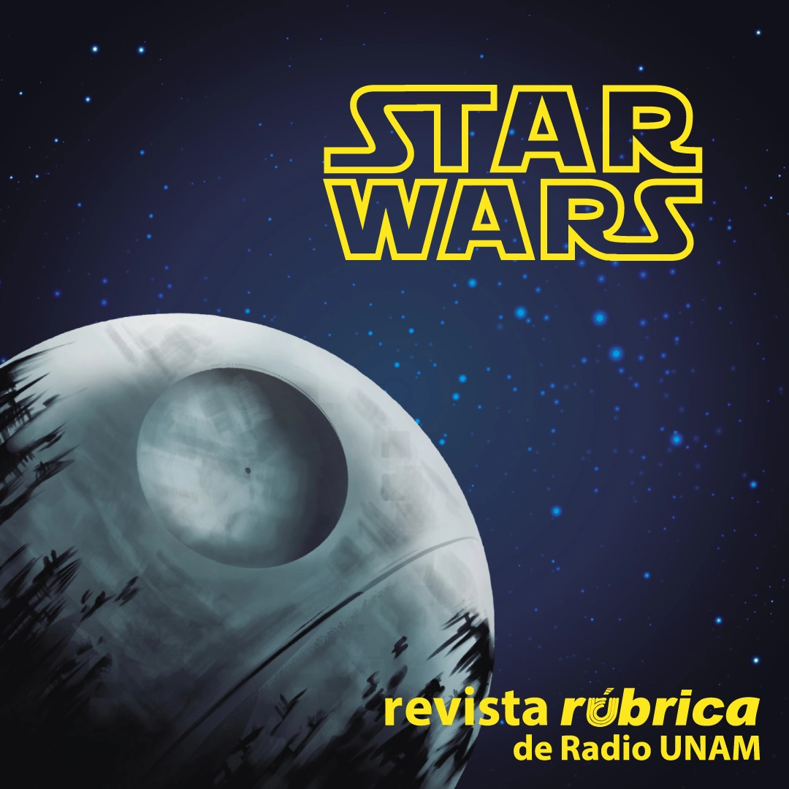
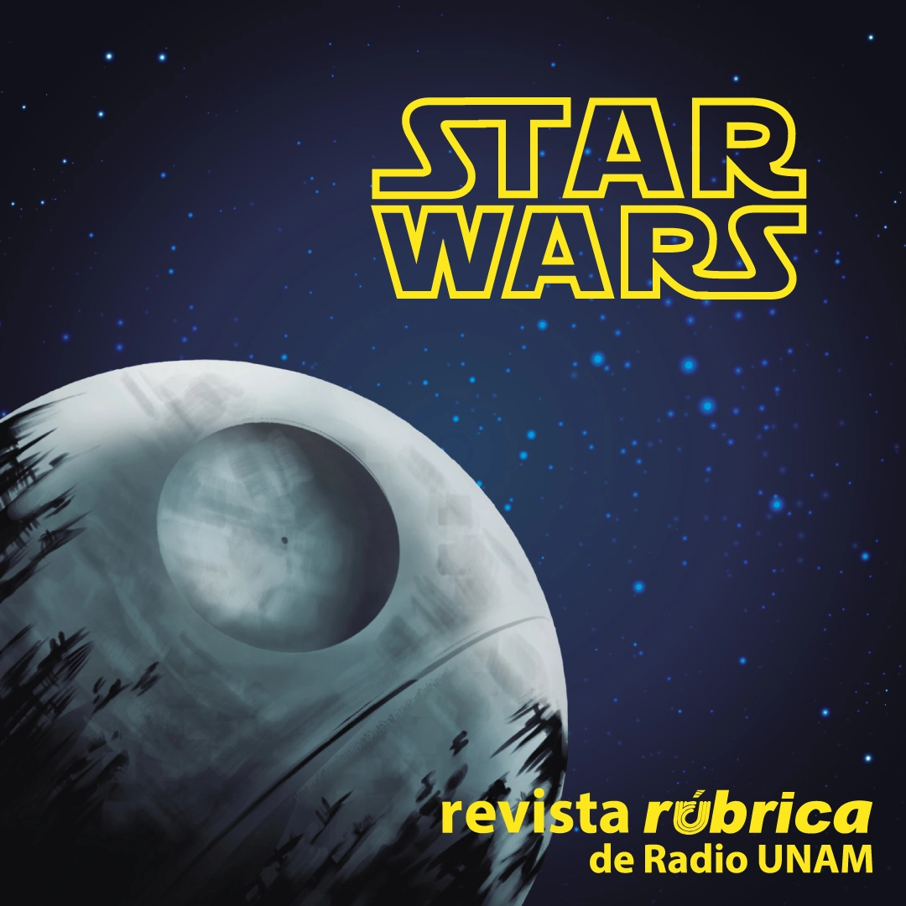

¡Hola, hola! mucho gusto, me llamo Luz Sánchez
Soy diseñadora _
Me apasiona el aprendizaje y la colaboración, lo cual se refleja en mi compromiso con el crecimiento tanto personal como organizacional. Mi determinación me lleva a desarrollar soluciones creativas y efectivas que impulsan el logro de objetivos, optimizando la resolución de problemas y elevando la calidad de los resultados.

¡Descubre mis habilidades y conocimientos!
Mi educación
Oracle Next Education en Alura Latam
Ene. 2023 – Oct. 2023
Programación
Universidad Autónoma Metropolitana
Sep. 2017 – Oct. 2021
Diseño de la Comunicación Gráfica
Título y cédula profesional.
Graduada como uno de los mejores promedios de mi generación.
Otros estudios
A pesar de ser egresada, sigo aprendiendo día a día mediante cursos, capacitaciones o programas.


Software
Adobe Photoshop
Nivel intermedio
Adobe Illustrator
Nivel avanzado
Adobe InDesing
Nivel avanzado
Adobe Premiere Pro
Nivel intermedio
Figma
Nivel básico
Visual Studio Code
Nivel intermedio
Descubre mis contribuciones a distintas empresas
Diseñadora Gráfica
Universidad Autónoma Metropolitana
May. 2023 – Julio 2024
- Desarrollo y creación de estrategias de redes sociales con más de 100 publicaciones mensuales, incrementando el alcance en un 20%.
- Difusión de campañas de comunicación, lo que resultó en un aumento del 15% en la asistencia a los eventos.
- Implementación de sesiones mensuales para la revisión y mejora del sitio web institucional.

Diseñadora Web | Freelance
Editorial luxpluslux
Dic. 2021 – Dic. 2022
- Desarrollé un plan de diseño y ejecución del sitio web, enfocándome en la usabilidad y satisfacción del usuario.
- Responsable de estrategias de mantenimiento regular del sitio web, resultando en un aumento del 10% en las suscripciones en línea.

Diseñadora Web | Freelance
Anuncios Rodríguez
Nov. 2021 – Ene. 2022
- Gestora y ejecutora del rediseño y reestructuración del sitio web.
- Desarrollo e implementación de un diseño responsivo y una interfaz intuitiva, lo que resultó en un aumento del 20% en usuarios desde dispositivos móviles.
- Creación de materiales gráficos, mejorando la velocidad de carga en un 25% para una experiencia de usuario más fluida.

Diseñadora Web
Radio UNAM
May. 2021 – Nov. 2021
- Definí la estrategia de contenidos digitales, creando materiales gráficos que aseguraron 20 publicaciones mensuales en redes sociales.
- Gestioné y desarrollé el sitio web de la revista Rúbrica desde cero, planificando la arquitectura de la información, maquetación y optimización de más de 50 artículos. Completé el 40% del proyecto, incluyendo diseño responsivo y optimización de imágenes para mejorar la velocidad de carga.
Diseñadora Gráfica
LEGA
Ago. 2019 – Mar. 2022
- Revisé, ajusté y adapté artes en preprensa, mejorando el rendimiento de los materiales de producción en un 15% sin comprometer la calidad durante el proceso de impresión.
- Diseñé e incorporé nuevos productos publicitarios, ampliando la variedad de opciones disponibles para los clientes y aumentando las ventas en un 10%.
Portafolio
Me encantaría compartir mis proyectos contigo y espero que disfrutes de mi trabajo tanto como lo hice al crearlo.
Sitio web
COMPLIANCE RISK & FRAUD
WordPress
Colaboré con el equipo de marketing en el proyecto CRF para actualizar el sitio web y mejorar la experiencia del usuario. Me enfoqué en diseñar y desarrollar una arquitectura intuitiva, funcional y responsiva. Logramos aumentar el tiempo de permanencia en un 25% y reducir la tasa de rebote en un 15%.
Sitio web
Luxpluslux
WordPress, HTML5
Colaboré con el fundador de la editorial y un diseñador para crear y lanzar su sitio web, consolidando su identidad digital. Gestioné el proyecto completo, implementando un diseño sofisticado que mejoró el rendimiento del sitio, reduciendo el tiempo de carga en un 20% y aumentando las suscripciones en un 30%.

Sitio web
Spa Flow
WordPress
Landing page
COMPLIANCE RISK & FRAUD
WordPress
Colaboré con el equipo de marketing para diseñar una landing page para un curso de prevención de lavado de dinero, con el objetivo de atraer y convertir estudiantes potenciales. Creé una maquetación moderna con imágenes impactantes y texto persuasivo, logrando un aumento en la tasa de conversión y un sold out en un 10% menos de tiempo comparado con el curso anterior.

Landing page
ENCRIPTADOR
HTML5, CSS3, JS
Desarrollé una landing page para una aplicación de encriptación, utilizando HTML5, CSS3 y JavaScript, asegurando que la funcionalidad y el diseño coincidieran con lo establecido. El proyecto me permitió aplicar conocimientos avanzados en desarrollo web y demostrar habilidades en la conversión de diseños en soluciones funcionales.
Landing page
TINDOG
HTML5, CSS3, Bootstrap

Diseño para redes sociales
Unidad Xochimilco
UAM
Colaboré con la Unidad de Comunicación, Identidad e Imagen Institucional para desarrollar contenido gráfico para redes sociales, destacando la identidad de la institución y promoviendo sus eventos. Planifiqué y coordiné la estrategia de contenidos, diseñando sus contenidos. Esto resultó en un aumento en el número de seguidores y el alcance de las publicaciones.


Diseño para redes sociales
Revista Rúbrica
Radio UNAM
Actualicé y mantuve el contenido visual en las redes sociales de la revista Rúbrica como parte del equipo de diseño de Radio UNAM. Creé imágenes promocionales para artículos y eventos, logrando un aumento del 10% en la tasa de interacción y mejorando el alcance y la eficacia de las publicaciones.
 



Diseño para redes sociales
Boletín Vaivén
Vaivén
Formé parte del equipo de Vaivén, donde creé contenido visual para redes sociales con el objetivo de expandir la audiencia y promover la movilidad universitaria. Diseñé y redacté publicaciones que resaltaron oportunidades y experiencias estudiantiles, logrando un aumento del 20% en el interés por la movilidad universitaria.


Diseño para redes sociales
Museo del Chocolate
Mucho Chocolate
Trabajé con Salma Lira, diseñadora gráfica, para aumentar la asistencia al museo mediante el rediseño y la gestión de contenido visual en redes sociales. Rediseñé el contenido y gestioné publicaciones temáticas, logrando una mejora significativa en la visibilidad y el reconocimiento del museo.


Diseño para redes sociales
Postres Bombón
Bombón
Creé contenido visual impactante para redes sociales con el objetivo de fortalecer la presencia en línea de la marca. Diseñé publicaciones que destacaron los productos, lo que aumentó el reconocimiento y la interacción en redes sociales, según métricas simuladas.


Revista
Informales
Informales
Colaboré con el equipo de Informales, siendo responsable del diseño y maquetación de la primera edición. El objetivo fue mantener a la audiencia informada sobre temas actuales con un diseño visualmente atractivo y funcional. Desarrollé un diseño editorial estético y funcional, lo que resultó en una recepción positiva por su claridad y accesibilidad.

Libro
Jódete cáncer
Editorial Luxpluslux
Colaboré con el jefe de edición de Luxpluslux para transmitir la voz de Sandra Monroy y aumentar la conciencia sobre el cáncer mediante un diseño editorial impactante. Diseñé, cuidé la edición, formateé y maqueté el libro, asegurando una presentación conmovedora y clara del mensaje, lo que contribuyó a la sensibilización sobre el tema.
Diseño para redes sociales
Boletín Vaivén
Proyecto
Formé parte del equipo de Vaivén, donde me encargué de la redacción, corrección, recopilación de datos, diseño, maquetación y edición de imágenes para informar y motivar a los estudiantes sobre la movilidad universitaria. El proyecto mejoró la participación y visibilidad, incrementando la interacción e interés en el boletín.
Libro de texto
Ciencias y Tecnología
Proyecto
Colaboré con Salma Lira en la optimización de la maquetación y el diseño editorial de un libro de texto para secundaria, basado en una investigación sobre las necesidades del público objetivo. Rediseñé el contenido para hacerlo más accesible y relevante, mejorando la usabilidad y el atractivo visual, y facilitando una mejor comprensión de los temas por parte de los estudiantes.

Revista
Cultura Verde
Proyecto
Contribuí en un equipo de diseño para crear una revista enfocada en el medio ambiente, abordando temas de contaminación y soluciones ecológicas. Colaboré en el desarrollo del contenido y diseño, seleccionando imágenes y organizando la maquetación. La revista se destacó por su atractivo visual y calidad informativa, aumentando la conciencia ambiental entre los lectores.
Fotografía
Vida & Naturaleza
Fotografía de paisaje
A través de esta serie, he explorado diversos escenarios, desde paisajes naturales hasta bulliciosas calles urbanas. Cada imagen celebra la riqueza y diversidad del planeta, invitando a los espectadores a conectar profundamente con su entorno.


Fotografía
Sabor a Fresa
Fotografía de producto
Esta colección destaca la frescura y el atractivo de las fresas. Mediante un enfoque detallado y evocador, he capturado la tentación y la belleza de esta fruta en su máxima expresión.


Fotografía
Luz y Sombras
Fotografía de estudio
En esta serie artística, exploro la dinámica entre la luz y la oscuridad en la fotografía de estudio. Cada imagen representa un análisis profundo de cómo la iluminación puede transformar y resaltar la belleza de las formas humanas.


Fotografía
Arte Constructivista
Fotografía de estudio
Estas imágenes visualizan la esencia del movimiento constructivista en el arte. A través de la fotografía de estudio, busqué capturar la integración de forma y función, creando una armonía visual única que refleja el espíritu del constructivismo.


Fotografía
Retratos de la Humanidad
Fotografía de retrato
En esta serie de retratos, celebro la belleza y autenticidad de cada individuo. Estas fotografías destacan la riqueza que la diversidad aporta a nuestro mundo, ofreciendo una visión profunda y sincera de la condición humana.


El corazón detrás de cada proyecto

Soy Luz Sánchez, una apasionada diseñadora web y gráfica de
29 años, nacida en la vibrante Ciudad de México.
Desde mi infancia, he mantenido una profunda afinidad por el diseño, a tal grado que solía
perderme durante horas plasmando mis ideas en papel. Con el tiempo, me di cuenta de que mi pasión
por el diseño era más que un simple hobby, y decidí convertirlo en mi profesión.
Como persona, me defino como alguien
decidida, apasionada y honesta.
Día a día trabajo en desarrollar distintas destrezas que me
permitan superar varios retos en el ambito
personal y laboral. Soy una persona con matices,
tanto virtudes como imperfecciones, pero siempre en búsqueda constante de
crecimiento y aprendizaje en todas las
facetas de la vida. La gratitud y la humildad son valores fundamentales para mí, y me esfuerzo
por retribuir de manera constante las bendiciones que la vida me ha brindado.
Mis pasatiempos
Considero esencial mantener un equilibrio entre mi vida personal y laboral. Para lograrlo, disfruto de pasiones como el patinaje, la fotografía y la exploración urbana, así como el amor por viajar y experimentar nuevas culturas. La búsqueda de adrenalina me lleva a saltar en paracaídas y escalar montañas. Soy una persona curiosa y siempre busco nuevos desafíos y experiencias para crecer en todas las facetas de la vida. Aunque soy perfeccionista y me esfuerzo por hacer las cosas de la mejor manera posible, también soy una apasionada del arte en todas sus formas.
¿Quieres contactarme?
Completa el siguiente formulario y me pondré en contacto contigo lo antes posible.